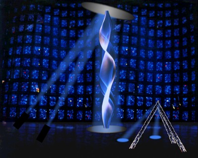

PHYSICS TODAY
April 1998
New York Exhibition Marries Art and Science
LightForms '98, an exhibition of interactive, light-based art, opens this month at the New York Hall of Science. Organised by the non profit group Art & Science Collaborations Inc (ASCI), the show features three large-scale installations chosen for both their scientific and aestheitc appeal.
British artist Paul Friedlander's "Dark Matter" is one of the featured works. "I'm an interdisciplinary person by nature," says Friedlander, who holds bachelor's degrees in both physics and fine art. "I see my work as exploring the areas of contact between art and science." As seen in the computer-rendered image at right, the central element of "Dark Matter" is an undulating vaporous waveform that rises seven meters from the floor. Friedlander created the effect by illuminating a spinning rope with a high-power arc lamp reflected off a mylar mirror. The arc lamp (on loan from the rock group Pink Floyd) has been configured to shift color rapidly, in sync with the rope's rotation. When the rope rotates fast enough (around 600 rpm), the human eye perceives a three dimensional multicolored image. Visitors's can trigger changes in the sculpture's color and shape by passing through a pair of SoundBeams, located in the triangular structure at the lower right.
"Dark Matter" and the show's other works will be housed in the museum's Great Hall., a setting that ASCI founder Cynthia Pannucci calls "one of the most appropriate spaces in the world for light art. Its like a homogenous cave, or a cathedral." The only natural light entering the 24 metre high interior is filtered through bits of cobalt blue glass imbedded in the walls.
LightForms '98 will run from 17 April through 31 May; museum interpreters will be on hand to explain the science underlying each piece. The hall is located in the Corona Park section of Queens, New York. Information is available at the museums Web site, http://www.nyhallsci.org, or by calling 718-699-0005.
Jean Kumagai